Lumara es nuestra sirena de los cebos. Empezó como un estudio de Ofidia, la sirena-sierpe
de la tercera dungeon de Dedsafio 4, con diseño de Eufonia Studio
(el cartel oficial, en X), y ahora tiene
nombre propio. Se hizo comparando cada render con la portada y con el directo del 10 de octubre, lado a lado y
desde el mismo ángulo, y con tus correcciones una a una. Lo nuevo de esta versión:
cada variante tiene su cartel, de cerca y desde abajo, con el cielo y la luz de su neón; y
el borde blanco rodea también las alas, en todas las fotos. En el juego, cuando entre al mod, llevará ese
borde siempre. La original sigue muy cerca de la Ofidia de Dedsafio; para el mod, mejor una de las variantes.
Cómo es Lumara
Su cuerpo
- La pose, la del directo (el fotograma que marcaste): el torso se echa un poco hacia delante; encima, un cuello de dos tambores de mármol sube y se adelanta, y sobre él va la cabeza, mirando al frente; debajo de ella se ve el costillar. Debajo de la cintura, el cuerpo baja, se abomba hacia delante por debajo de la cabeza y se curva hacia atrás hasta la aleta. Flota: no toca el suelo.
- Por tramos, de arriba abajo: el pecho; la cintura, pequeña; y tambores de mármol de una pieza, con un cinturón grueso en cada junta, que van de menor a mayor y de mayor a menor hasta la aleta roja. Siguen la ese sin girarse. Lo más gordo, a la mitad, es el doble que la cintura; en general, es estrecho.
- El pecho, solo costillas: seis pares de costillas rosas que brillan, huesos curvos que salen de la columna, rodean el pecho bajando un poco y vuelven por delante hasta el esternón. Las del medio son las más anchas y las dos de abajo quedan sueltas. Entre ellas, huecos oscuros.
- Dos alas de murciélago, abiertas del todo a los lados: casi horizontales, con las puntas un poco hacia arriba. El brazo tiene el codo hacia atrás y la muñeca hacia delante. De la muñeca salen cuatro dedos largos en abanico, con la membrana azul noche tendida entre ellos y el borde en arcos. En las axilas no hay membrana. No llevan cubos de luz; los huesos, de mármol oscuro, tienen una veta del neón que brilla un poco.
Su cabeza
- Grande y maciza, como en la portada: una capucha alta de azul noche, en capas, con el pico en escalones hacia atrás, unas melenas oscuras que se rizan detrás como algas y una fila de pinchos.
- La boca: las dos mandíbulas son medio rectángulo y medio triángulo, es decir, rectas atrás y en punta delante, con la bisagra atrás. La de arriba es larga y recta, lila por encima y en la punta, con la gema blanca en la arista, y lleva por todo el borde una fila de colmillos rosas y blancos dibujados en hojas, no hechos de cubos. La de abajo es una bandeja rosa por dentro, con el borde de mármol y los dientes rojos en escalón, también dibujados en hojas, y cuelga muy abierta, en diagonal.
- Abierta, de frente se ve el escudo rosa que acaba en punta debajo de la visera, delante del pecho, como en la portada. Lleva además dos cuernos lila.
- Tres cebos, de varillas gruesas: el de arriba sale de un tallo negro con muescas, sube y se dobla hacia atrás; los de los lados salen de la capucha y se doblan hacia atrás y abajo, hasta la altura de la visera. Acaban en cubos rosas. El gancho negro sale de un lado de la punta de la mandíbula de arriba y sube, como en el cartel. También lleva una media luna lila.
Las variantes
Las tres usan el mismo cuerpo que la original: flotan con la cola colgando hasta la aleta, y tienen las mismas proporciones, el pecho de costillas, las alas de murciélago y la misma boca.
Lo que cambia es la forma de lo que la enmarca, el material y el neón, para que no sea una copia.
O · la original · neón rosa
Lumara, la original
La base, hecha a partir de la portada de Ofidia, del directo y de tus marcas. Flota con la pose del
directo: la cabeza grande sobre su cuello y las alas de murciélago abiertas a los lados. Bajo el pecho de costillas
rosas, la cintura pequeña y el cuerpo, que crece y mengua hasta la aleta roja. La primera imagen es su cartel.
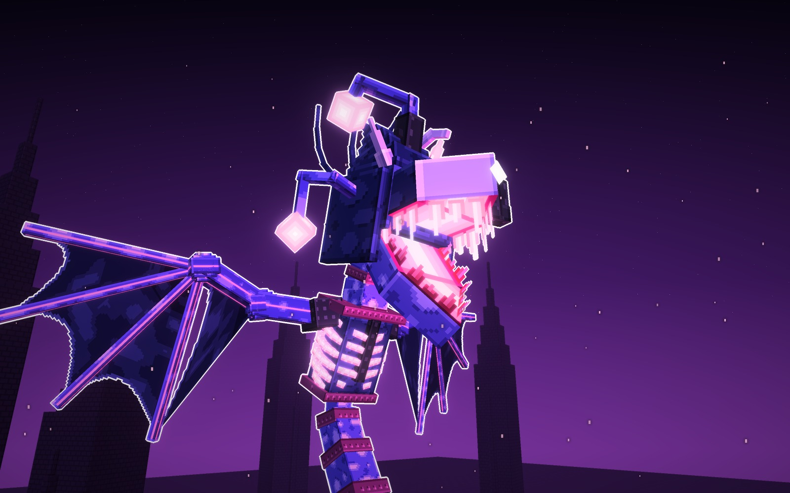
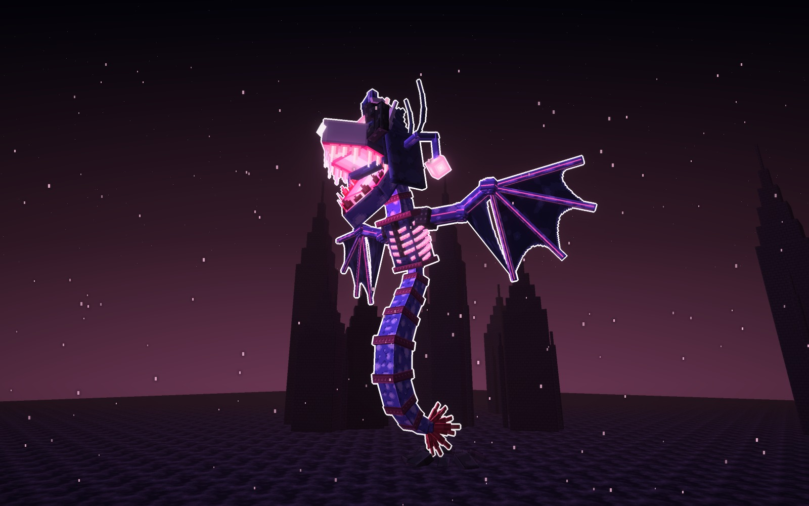
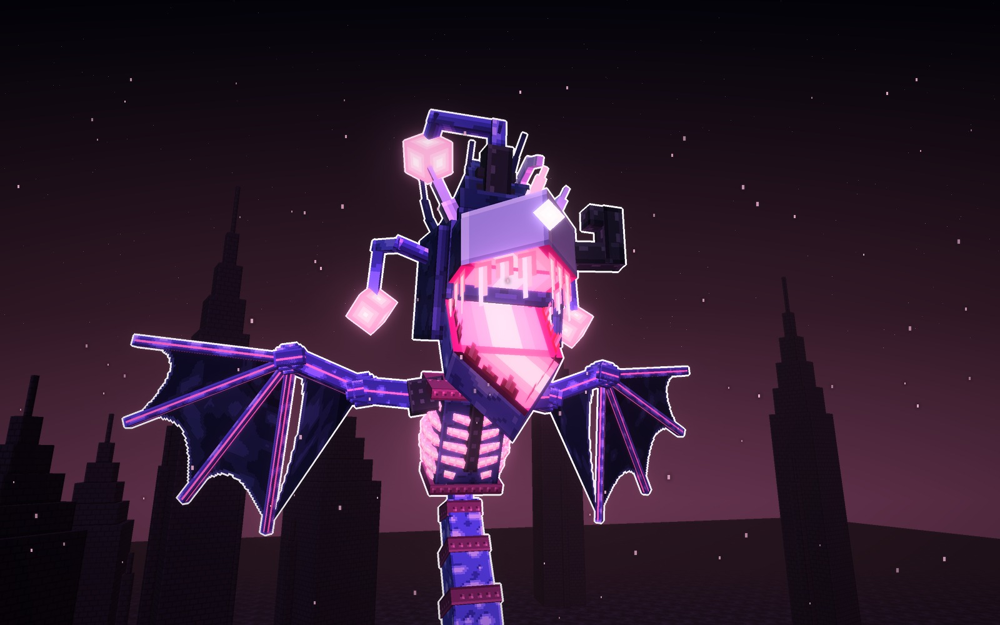
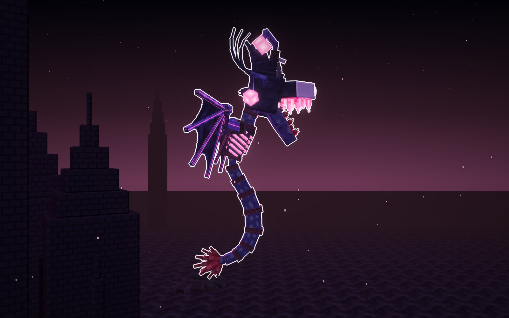
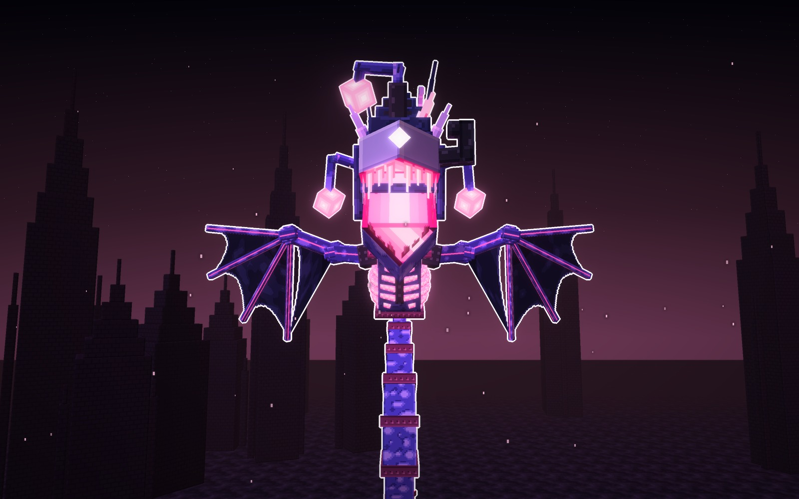
A · de la capucha · neón azul hielo
Lumara de la Capucha
El mismo cuerpo de Lumara, sin cebos. Su capucha se abre detrás de la cabeza en una capucha de cobra
enorme, con el canto encendido y dos ojos falsos que miran. El mármol es claro, de luna, y los cinturones son de
hierro.
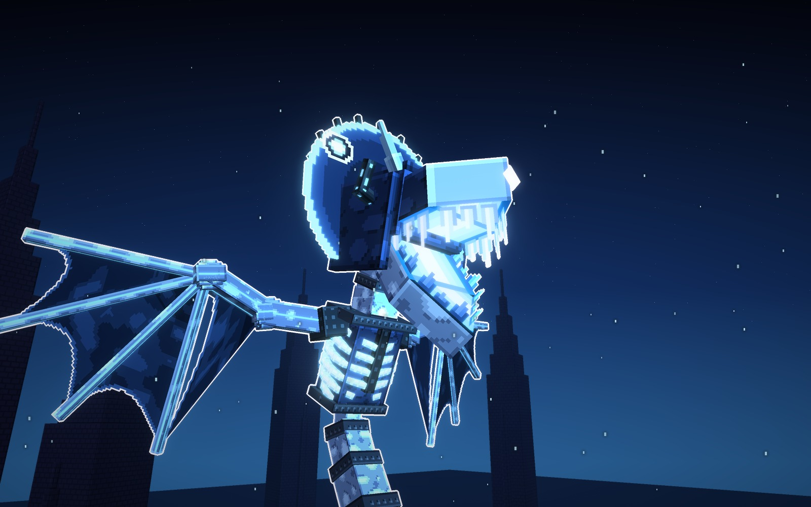
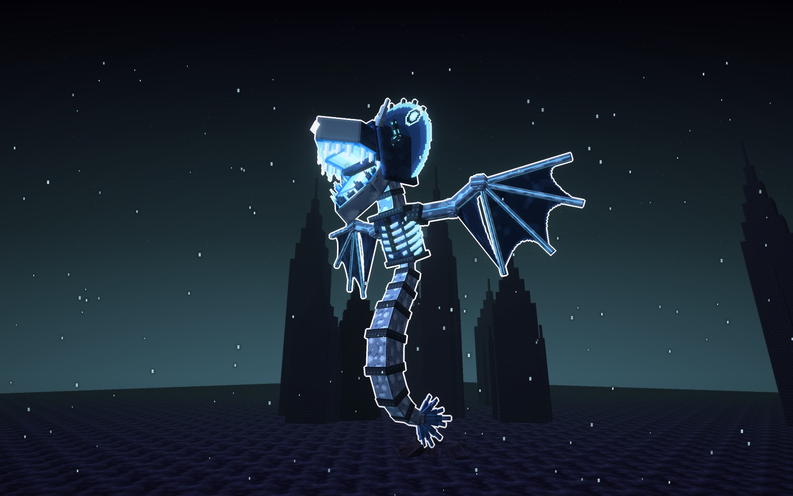
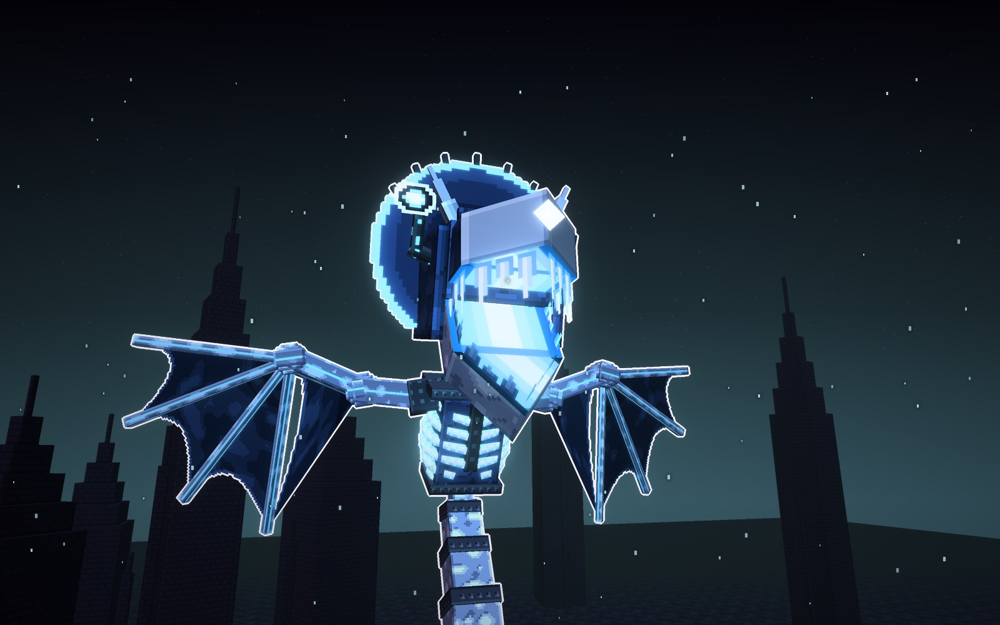
Su forma
- Enmarca
- una capucha ovalada de membrana con siete varillas detrás
- Lo nuevo
- dos ojos falsos en la capucha, con la pupila encendida
- Cuernos
- dos cortos en gancho
- Mármol
- de luna, con manchas claras; cinturones de hierro
Señas
- Su silueta es un halo redondo detrás de la cabeza.
- La más limpia de las tres.
mármol
hierro
capucha
neón
B · de los faroles · neón verde de almas
Lumara de los Faroles
El mismo cuerpo de Lumara. Sus cebos se hacen faroles de hierro con un alma dentro: seis en corona sobre
la capucha, con cadenas entre ellos, y uno a cada lado de la cabeza. Las alas no llevan luz, como en la original. El
mármol es pizarra y los cinturones, de latón.
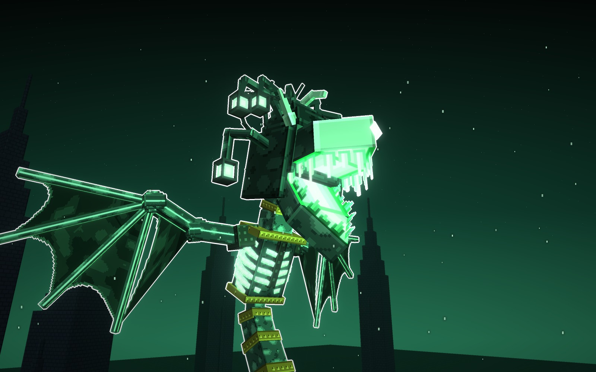
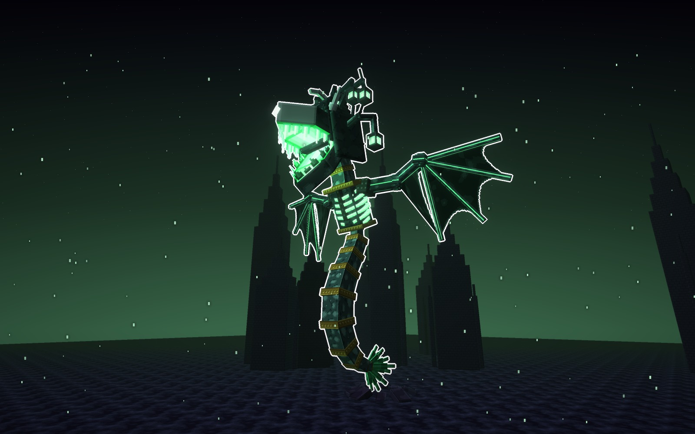
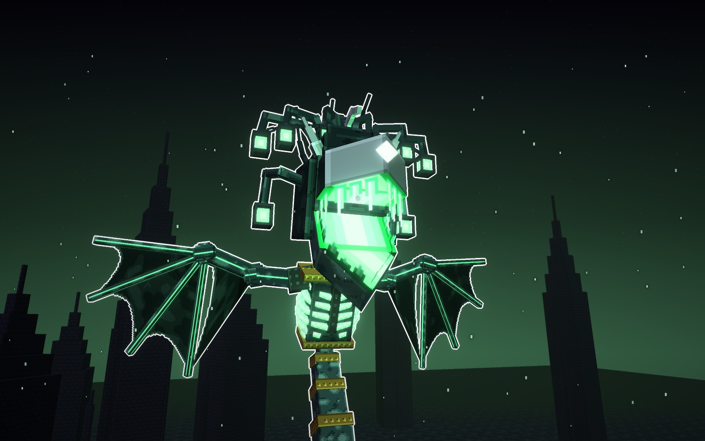
Su forma
- Enmarca
- seis varillas en abanico, cada una con su farol colgando
- Lo nuevo
- los faroles llevan las almas de sus prisioneros
- Alas
- las de murciélago, sin luz, como la original
- Mármol
- pizarra verdosa; cinturones de latón
Señas
- Su silueta es una corona de luces.
- La que más cuenta la historia de los prisioneros.
mármol
latón
hierro
neón
C · encadenada · neón carmesí
Lumara Encadenada
El mismo cuerpo de Lumara, encadenado. Lleva grilletes oxidados en las alas con la cadena rota, y su pecho
es una celda con barrotes delante del costillar. Cadenas le cruzan el cuerpo de tambor en tambor, y en vez de cebos le
cuelgan dos cadenas rotas con su grillete. En la cabeza lleva un bozal de hierro que se le ha roto por delante, cuernos de
carnero en espiral y jirones. El mármol es negro, con vetas rojas que brillan.
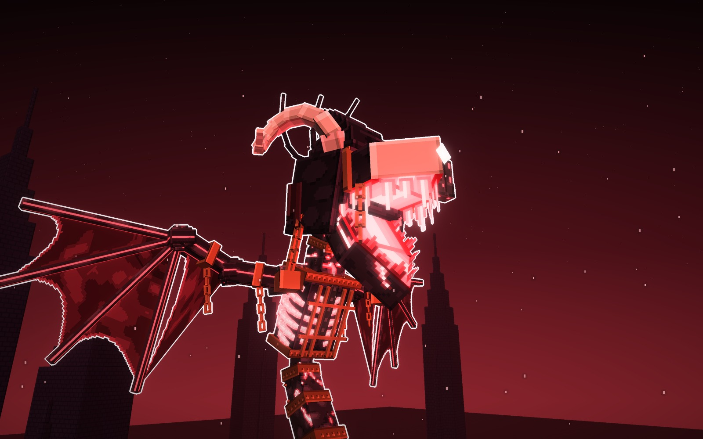
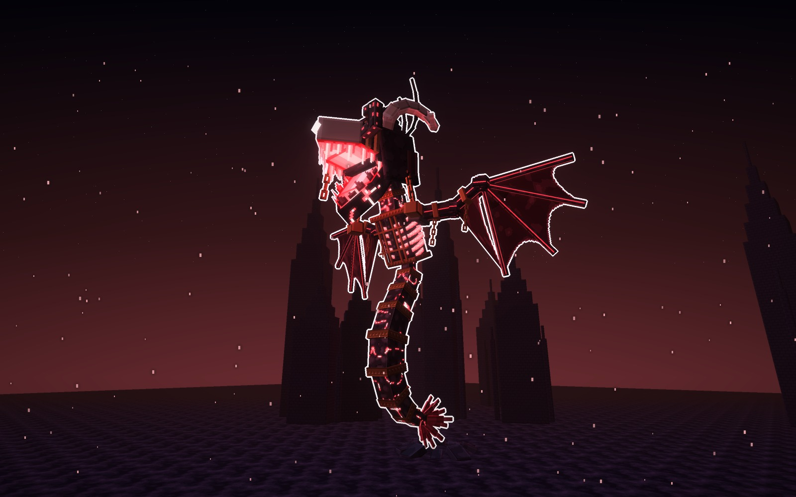
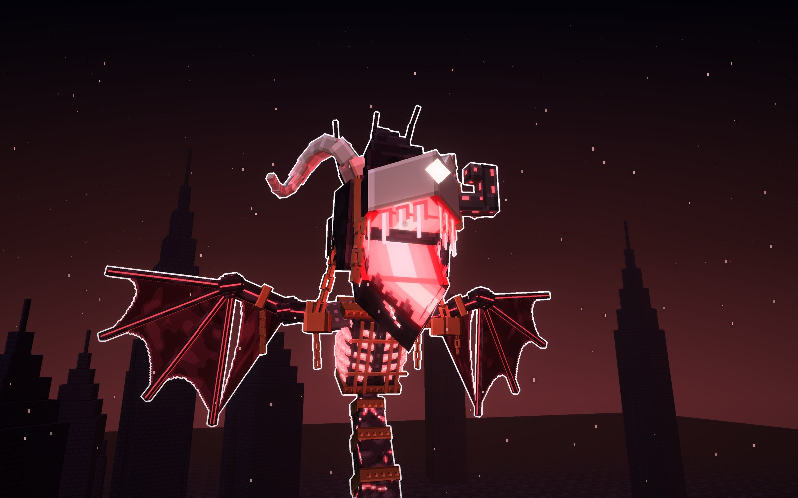
Su forma
- Enmarca
- dos cuernos de carnero en espiral y dos jirones
- Lo nuevo
- el bozal de hierro roto: la mandíbula ha quedado libre
- Cuerpo
- grilletes en las alas, barrotes en el pecho y cadenas por el cuerpo
- Mármol
- negro con vetas rojas; cinturones de hierro oxidado
Señas
- Su silueta son los cuernos y las cadenas.
- La más pesada y la más rabiosa.
mármol
óxido
cuerno
neón
Las cuatro, a escala
La original y sus tres variantes, con la misma luz y un jugador delante (1,8 bloques). Miden unos 47 bloques
de alto con los cebos y la aleta, y unos 41 de punta a punta de las alas.
Los materiales
Las texturas de cada una a píxel grande, sin letras. De izquierda a derecha: el mármol (dibujado a mano),
el cinturón con sus remaches, la capucha, los colmillos, la costilla, el hueso del ala con su veta, la membrana y lo
propio de cada una (la varilla de los cebos, la capucha de cobra, el hierro de los faroles y el óxido). De arriba abajo:
la original, la de la Capucha, la de los Faroles y la Encadenada.
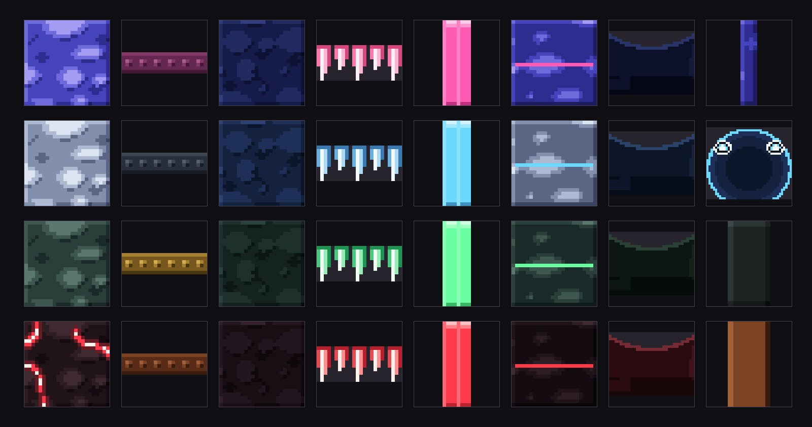
Veredicto de Juan
El mejor diseño hasta ahora (13-10-2026). Le gustó la Encadenada. La original sigue muy cerca de la Ofidia de Dedsafio 4; para el mod, mejor una de las variantes.
Bocetos: materiales/generadores/lumara_modelo.py y lumara_escenas.py.